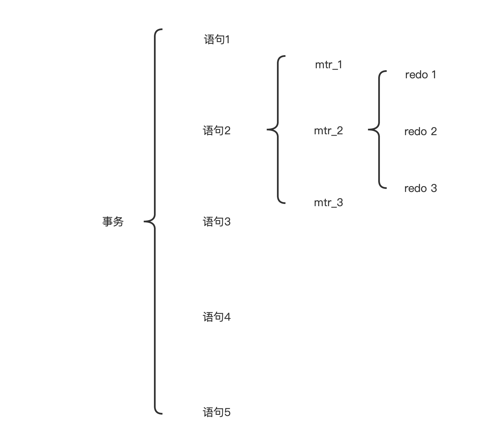

<!DOCTYPE html>


<html lang="zh-CN">


<head>
  <meta charset="utf-8" />
    
  <meta name="viewport" content="width=device-width, initial-scale=1, maximum-scale=1" />
  <title>
    MySQL —— Redo log |  JsyBlog
  </title>
  <meta name="generator" content="hexo-theme-ayer">
  
  <link rel="shortcut icon" href="/images/ayer.png" />
  
  
<link rel="stylesheet" href="/dist/main.css">

  <link rel="stylesheet" href="https://cdn.jsdelivr.net/gh/Shen-Yu/cdn/css/remixicon.min.css">
  
<link rel="stylesheet" href="/css/custom.css">

  
  <script src="https://cdn.jsdelivr.net/npm/pace-js@1.0.2/pace.min.js"></script>
  
  

  

</head>

</html>

<body>
  <div id="app">
    
      
      <canvas width="1777" height="841"
        style="position: fixed; left: 0px; top: 0px; z-index: 99999; pointer-events: none;"></canvas>
      
    <main class="content on">
      <section class="outer">
  <article
  id="post-redolog"
  class="article article-type-post"
  itemscope
  itemprop="blogPost"
  data-scroll-reveal
>
  <div class="article-inner">
    
    <header class="article-header">
       
<h1 class="article-title sea-center" style="border-left:0" itemprop="name">
  MySQL —— Redo log
</h1>
 

    </header>
     
    <div class="article-meta">
      <a href="/2021/12/09/redolog/" class="article-date">
  <time datetime="2021-12-09T10:47:05.000Z" itemprop="datePublished">2021-12-09</time>
</a> 
  <div class="article-category">
    <a class="article-category-link" href="/categories/MySQL/">MySQL</a>
  </div>
  
<div class="word_count">
    <span class="post-time">
        <span class="post-meta-item-icon">
            <i class="ri-quill-pen-line"></i>
            <span class="post-meta-item-text"> 字数统计:</span>
            <span class="post-count">1.9k</span>
        </span>
    </span>

    <span class="post-time">
        &nbsp; | &nbsp;
        <span class="post-meta-item-icon">
            <i class="ri-book-open-line"></i>
            <span class="post-meta-item-text"> 阅读时长≈</span>
            <span class="post-count">6 分钟</span>
        </span>
    </span>
</div>
 
    </div>
      
    <div class="tocbot"></div>


  
    <div class="article-entry" itemprop="articleBody">
       
  <h1 id="RedoLog介绍"><a href="#RedoLog介绍" class="headerlink" title="RedoLog介绍"></a>RedoLog介绍</h1><h2 id="引言——MySQL如何做到事务的持久性"><a href="#引言——MySQL如何做到事务的持久性" class="headerlink" title="引言——MySQL如何做到事务的持久性"></a>引言——MySQL如何做到事务的持久性</h2><p>MySQL中如何修改数据呢，先从磁盘中加载数据页到InnoDB buffer pool中，然后从InnoDB buffer pool 中取出页面，进行读写操作。</p>
<p>那么如何做到事务的持久性呢，也就是说如何确保InnoDB buffer pool中的脏页一定会被刷新到磁盘从而做到持久化呢？</p>
<p>一种最简单的方法，在事务提交成功之前，确保脏页被刷新到磁盘，换句话说，只有在脏页写到磁盘上之后，事务提交才算成功。</p>
<p>不过这种方案有缺点：</p>
<ol>
<li><strong>每次都刷新一个完整的页到磁盘性能开销很大</strong>。比如，一个页面中只有几个字节被修改的时候，刷新完整的页面到磁盘很浪费。</li>
<li><strong>磁盘的随机IO很慢</strong>，一个事务修改的很多页面可能并不相邻，这个时候每个事务结束前都这样同步刷新的磁盘随机IO代价很大。</li>
</ol>
<p>MySQL采取的做法是，仅仅记录下那些修改的操作，譬如<strong>修改某个表空间的某个页面的某个偏移量的某几个字节</strong>，然后将这样的记录及时写到文件中。然后每次事务提交前只需要刷新这样的日志文件到磁盘即可。</p>
<p>而这样的日志文件就是 <strong>rodo log</strong> 了。</p>
<p>刷新redo-log而不是完整的数据页到磁盘的好处有：</p>
<ol>
<li>redo日志相对来讲比较紧凑，占用的空间比较小；</li>
<li>redo日志是顺序写入磁盘的，磁盘的顺序IO效率很高。</li>
</ol>
<h2 id="redo日志格式"><a href="#redo日志格式" class="headerlink" title="redo日志格式"></a>redo日志格式</h2><p>redo log 包括两部分：</p>
<ol>
<li><p>一个是内存中的日志缓冲(redo log buffer)；</p>
</li>
<li><p>另一个是磁盘上的日志文件(redo log file)。</p>
</li>
</ol>
<p>下面依次介绍</p>
<ol>
<li>type：这条redo日志的格式；</li>
<li>space ID：表空间 ID；</li>
<li>page number：页号；</li>
<li>data：这条redo日志的具体内容。</li>
</ol>
<p>具体来说redo日志的种类有非常多，这里就不细谈了。</p>
<p>挖个坑。</p>
<h2 id="Mini-transaction-的概念"><a href="#Mini-transaction-的概念" class="headerlink" title="Mini-transaction 的概念"></a>Mini-transaction 的概念</h2><p>MySQL对底层页面的一次原子性的访问成为一个Mini-Transaction（MTR）</p>
<p>一个MTR产生多个redo日志。</p>
<p>之所以把它成为迷你的一个事务，是因为在进行崩溃恢复的时候需要把这一组redo日志作为一个不可分割的整体来处理。</p>



<h2 id="redo日志的管理"><a href="#redo日志的管理" class="headerlink" title="redo日志的管理"></a>redo日志的管理</h2><h3 id="log-block"><a href="#log-block" class="headerlink" title="log block"></a>log block</h3><p>redo日志放在大小为512字节的log block 中。每一个block被分为 3 部分：</p>
<ul>
<li>log block header</li>
<li>log block body</li>
<li>log block trailer</li>
</ul>
<p>而真正的redo日志是被放在占用 496 字节的 block body 中的。</p>
<h3 id="redo-log-buffer"><a href="#redo-log-buffer" class="headerlink" title="redo log buffer"></a>redo log buffer</h3><p>为了解决磁盘速度过慢的问题，写入redo日志也不是直接立即写到磁盘中的。</p>
<p>于是，MySQL向操作系统申请了一大片内存，称为redo 日志缓冲区，也成为 redo buffer，</p>
<p>一个redo buffer有若干的 log block 构成。可以指定<code>innodb_log_buffer_size</code>来指定 log buffer 的大小。</p>
<p>向 log buffer 中写入redo日志也是顺序写入的。</p>
<h2 id="redo-log的刷盘时机"><a href="#redo-log的刷盘时机" class="headerlink" title="redo log的刷盘时机"></a>redo log的刷盘时机</h2><p>redo日志总留在log buffer中，总是不安全的，只要没有写到稳定的存储介质（磁盘、固定硬盘等等）中就不能保证持久性。</p>
<p>那么在什么情况下，redo日志会被写到磁盘上呢？</p>
<ol>
<li><p>事务提交时：道理很好理解，事务提交还没有将redo log 刷盘就无法做到持久性；</p>
</li>
<li><p>log buffer 空间不足时：log buffer 这块内存总是有限大小的，那么在redo log不够使用时，也需要即使把redo log 刷新到磁盘。InnoDB在日志量达到总容量的额50% 时，就会刷盘；</p>
</li>
<li><p>后台线程定时刷新；</p>
</li>
<li><p>正常关闭服务器时；</p>
</li>
<li><p>做checkpoint时。</p>
</li>
</ol>
<h2 id="redo日志文件"><a href="#redo日志文件" class="headerlink" title="redo日志文件"></a>redo日志文件</h2><p>之前谈的所有的redo log其实都是内存性的结构，那么存在在稳定介质中的便是 redo日志文件了。</p>
<p>磁盘上的日志文件不止一个，而是以一个日志文件组的形式出现，一个日志文件组由多个日志文件组成，名字形式为”ib_logfile[数字]”。<br>每个日志文件的大小由<code>innodb_log_file_size</code>指定，默认是 48 MB。<br>日志文件组文件的个数由<code>innodb_log_files_in_group</code>指定，默认是2个。</p>
<p>所以，总体的日志文件的大小便是<strong>innodb_log_file_size*innodb_log_files_in_group</strong>，</p>
<p>如果以循环的方法向redo日志文件中写入数据，那岂不是新写入的会覆盖旧写入的吗？</p>
<p>如何解决这个问题，MySQL提出了 checkpoint的概念（后面或介绍）。</p>
<p>每个日志的文件格式是一样的，日志组内的其他的日志文件也是具有相同的格式。</p>
<p>前2048个字节存储一些管理信息，后面的字节，实际上就是对内存中的log buffer的镜像。</p>
<h2 id="log-sequence-number相关"><a href="#log-sequence-number相关" class="headerlink" title="log-sequence-number相关"></a>log-sequence-number相关</h2><h3 id="lsn"><a href="#lsn" class="headerlink" title="lsn"></a>lsn</h3><p>InndoDB设计了名为lsn的全局变量，用来记录当前已经写入的<strong>lsn</strong>值，初始值为8704，然后不断递增。</p>
<p>lsn指的是写入的redo 日志量，这包括了写到了 log buffer 中但没有刷新到磁盘的redo日志。</p>
<h3 id="flushed-to-disk-lsn"><a href="#flushed-to-disk-lsn" class="headerlink" title="flushed_to_disk_lsn"></a>flushed_to_disk_lsn</h3><p>相应的，InndoDB设计者提出了一个表示刷新到磁盘中的redo日志量的全局变量<strong>flushed_to_disk_lsn</strong>。</p>
<p>一开始，lsn等于flushed_to_disk_lsn，随着系统的运行，redo日志不断写入log buffer，但又没有即使刷盘，那么flushed_to_disk_lsn便和lsn拉开了差距。</p>
<h3 id="checkpoint-lsn"><a href="#checkpoint-lsn" class="headerlink" title="checkpoint_lsn"></a>checkpoint_lsn</h3><p>redo日志的大小总是有限的，那么就有必要对其进行重复利用。</p>
<p>具体的，如果redo日志对应的脏页已经刷新到磁盘，那么此时就没有必要再去保留这样的redo日志，</p>
<p>于是InnodB使用<strong>checkpoint_lsn</strong>表示当前系统中可以被覆盖redo日志总量是多少，这个变量的初始值也是8704。</p>
<p>MySQL中有后台线程在脏页刷新到磁盘的时候执行一次checkpoint操作，就是查看是否可以增加checkpoint_lsn（但是不是说只要刷新脏页就一定执行一次checkpoint操作）。</p>
<h2 id="innodb-flush-log-at-trx-commit"><a href="#innodb-flush-log-at-trx-commit" class="headerlink" title="innodb_flush_log_at_trx_commit"></a>innodb_flush_log_at_trx_commit</h2><p>它的取值有3种：</p>
<ul>
<li>0 ：事务提交时不会立即向磁盘同步redo日志。这样会加快处理速度，但是失去持久性这一保证，不可取。</li>
<li>1 ：事务提交时必须将redo日志同步到磁盘，这样可以保证事务的持久性。默认值就是1。</li>
<li>2：这是一个折中的选择，事务提交的时候需要同步到操作系统的写磁盘的缓冲区，但不一定要真正写到磁盘上。所以，如果数据库挂了，但是操作系统还没挂，持久性还是可以保证的；反之，持久性还是无法保证。</li>
</ul>
<h1 id="崩溃恢复"><a href="#崩溃恢复" class="headerlink" title="崩溃恢复"></a>崩溃恢复</h1><p>redo日志最重要的甚至是唯一的功能就是在数据库崩溃的时候提供数据恢复的保证了。</p>
<p>崩溃恢复的时候先找到恢复的起点。然后顺着日志文件就可以将数据正确恢复起来。</p>
<p>但是这个过程可以加快。</p>
<p>为了避免页面的随机IO，可以实现将redo文件的所有redo文件按照<strong>spaceID和pageNumber</strong><br>为键，然后组织成一张哈希表，然后遍历这张hash表就可以一次性完成对一个页面的恢复。<br>当然，同一个页面的redo日志必须安装时间顺序排序。</p>
 
      <!-- reward -->
      
    </div>
    

    <!-- copyright -->
    
    <div class="declare">
      <ul class="post-copyright">
        <li>
          <i class="ri-copyright-line"></i>
          <strong>版权声明： </strong>
          
          本博客所有文章除特别声明外，著作权归作者所有。转载请注明出处！
          
        </li>
      </ul>
    </div>
    
    <footer class="article-footer">
       
<div class="share-btn">
      <span class="share-sns share-outer">
        <i class="ri-share-forward-line"></i>
        分享
      </span>
      <div class="share-wrap">
        <i class="arrow"></i>
        <div class="share-icons">
          
          <a class="weibo share-sns" href="javascript:;" data-type="weibo">
            <i class="ri-weibo-fill"></i>
          </a>
          <a class="weixin share-sns wxFab" href="javascript:;" data-type="weixin">
            <i class="ri-wechat-fill"></i>
          </a>
          <a class="qq share-sns" href="javascript:;" data-type="qq">
            <i class="ri-qq-fill"></i>
          </a>
          <a class="douban share-sns" href="javascript:;" data-type="douban">
            <i class="ri-douban-line"></i>
          </a>
          <!-- <a class="qzone share-sns" href="javascript:;" data-type="qzone">
            <i class="icon icon-qzone"></i>
          </a> -->
          
          <a class="facebook share-sns" href="javascript:;" data-type="facebook">
            <i class="ri-facebook-circle-fill"></i>
          </a>
          <a class="twitter share-sns" href="javascript:;" data-type="twitter">
            <i class="ri-twitter-fill"></i>
          </a>
          <a class="google share-sns" href="javascript:;" data-type="google">
            <i class="ri-google-fill"></i>
          </a>
        </div>
      </div>
</div>

<div class="wx-share-modal">
    <a class="modal-close" href="javascript:;"><i class="ri-close-circle-line"></i></a>
    <p>扫一扫，分享到微信</p>
    <div class="wx-qrcode">
      
    </div>
</div>

<div id="share-mask"></div>  
  <ul class="article-tag-list" itemprop="keywords"><li class="article-tag-list-item"><a class="article-tag-list-link" href="/tags/MySQL/" rel="tag">MySQL</a></li></ul>

    </footer>
  </div>

   
  <nav class="article-nav">
    
      <a href="/2021/12/09/undolog/" class="article-nav-link">
        <strong class="article-nav-caption">上一篇</strong>
        <div class="article-nav-title">
          
            MySQL —— Undo log
          
        </div>
      </a>
    
    
      <a href="/2021/12/09/Raft/" class="article-nav-link">
        <strong class="article-nav-caption">下一篇</strong>
        <div class="article-nav-title">Raft</div>
      </a>
    
  </nav>

  
   
     
</article>

</section>
      <footer class="footer">
  <div class="outer">
    <ul>
      <li>
        Copyrights &copy;
        2020-2022
        <i class="ri-heart-fill heart_icon"></i> SongyangJi
      </li>
    </ul>
    <ul>
      <li>
        
      </li>
    </ul>
    <ul>
      <li>
        
      </li>
    </ul>
    <ul>
      
    </ul>
    <ul>
      
    </ul>
    <ul>
      <li>
        <!-- cnzz统计 -->
        
        <script type="text/javascript" src=''></script>
        
      </li>
    </ul>
  </div>
</footer>
      <div class="float_btns">
        <div class="totop" id="totop">
  <i class="ri-arrow-up-line"></i>
</div>

<div class="todark" id="todark">
  <i class="ri-moon-line"></i>
</div>

      </div>
    </main>
    <aside class="sidebar on">
      <button class="navbar-toggle"></button>
<nav class="navbar">
  
  <div class="logo">
    <a href="/"></a>
  </div>
  
  <ul class="nav nav-main">
    
    <li class="nav-item">
      <a class="nav-item-link" href="/">主页</a>
    </li>
    
    <li class="nav-item">
      <a class="nav-item-link" href="/archives">归档</a>
    </li>
    
    <li class="nav-item">
      <a class="nav-item-link" href="/categories">分类</a>
    </li>
    
    <li class="nav-item">
      <a class="nav-item-link" href="/tags">标签</a>
    </li>
    
  </ul>
</nav>
<nav class="navbar navbar-bottom">
  <ul class="nav">
    <li class="nav-item">
      
      <a class="nav-item-link nav-item-search"  title="搜索">
        <i class="ri-search-line"></i>
      </a>
      
      
    </li>
  </ul>
</nav>
<div class="search-form-wrap">
  <div class="local-search local-search-plugin">
  <input type="search" id="local-search-input" class="local-search-input" placeholder="Search...">
  <div id="local-search-result" class="local-search-result"></div>
</div>
</div>
    </aside>
    <script>
      if (window.matchMedia("(max-width: 768px)").matches) {
        document.querySelector('.content').classList.remove('on');
        document.querySelector('.sidebar').classList.remove('on');
      }
    </script>
    <div id="mask"></div>

<!-- #reward -->
<div id="reward">
  <span class="close"><i class="ri-close-line"></i></span>
  <p class="reward-p"><i class="ri-cup-line"></i>请我喝杯咖啡吧~</p>
  <div class="reward-box">
    
    
  </div>
</div>
    
<script src="/js/jquery-2.0.3.min.js"></script>


<script src="/js/lazyload.min.js"></script>

<!-- Tocbot -->


<script src="/js/tocbot.min.js"></script>

<script>
  tocbot.init({
    tocSelector: '.tocbot',
    contentSelector: '.article-entry',
    headingSelector: 'h1, h2, h3, h4, h5, h6',
    hasInnerContainers: true,
    scrollSmooth: true,
    scrollContainer: 'main',
    positionFixedSelector: '.tocbot',
    positionFixedClass: 'is-position-fixed',
    fixedSidebarOffset: 'auto'
  });
</script>

<script src="https://cdn.jsdelivr.net/npm/jquery-modal@0.9.2/jquery.modal.min.js"></script>
<link rel="stylesheet" href="https://cdn.jsdelivr.net/npm/jquery-modal@0.9.2/jquery.modal.min.css">
<script src="https://cdn.jsdelivr.net/npm/justifiedGallery@3.7.0/dist/js/jquery.justifiedGallery.min.js"></script>

<script src="/dist/main.js"></script>

<!-- ImageViewer -->

<!-- Root element of PhotoSwipe. Must have class pswp. -->
<div class="pswp" tabindex="-1" role="dialog" aria-hidden="true">

    <!-- Background of PhotoSwipe. 
         It's a separate element as animating opacity is faster than rgba(). -->
    <div class="pswp__bg"></div>

    <!-- Slides wrapper with overflow:hidden. -->
    <div class="pswp__scroll-wrap">

        <!-- Container that holds slides. 
            PhotoSwipe keeps only 3 of them in the DOM to save memory.
            Don't modify these 3 pswp__item elements, data is added later on. -->
        <div class="pswp__container">
            <div class="pswp__item"></div>
            <div class="pswp__item"></div>
            <div class="pswp__item"></div>
        </div>

        <!-- Default (PhotoSwipeUI_Default) interface on top of sliding area. Can be changed. -->
        <div class="pswp__ui pswp__ui--hidden">

            <div class="pswp__top-bar">

                <!--  Controls are self-explanatory. Order can be changed. -->

                <div class="pswp__counter"></div>

                <button class="pswp__button pswp__button--close" title="Close (Esc)"></button>

                <button class="pswp__button pswp__button--share" style="display:none" title="Share"></button>

                <button class="pswp__button pswp__button--fs" title="Toggle fullscreen"></button>

                <button class="pswp__button pswp__button--zoom" title="Zoom in/out"></button>

                <!-- Preloader demo http://codepen.io/dimsemenov/pen/yyBWoR -->
                <!-- element will get class pswp__preloader--active when preloader is running -->
                <div class="pswp__preloader">
                    <div class="pswp__preloader__icn">
                        <div class="pswp__preloader__cut">
                            <div class="pswp__preloader__donut"></div>
                        </div>
                    </div>
                </div>
            </div>

            <div class="pswp__share-modal pswp__share-modal--hidden pswp__single-tap">
                <div class="pswp__share-tooltip"></div>
            </div>

            <button class="pswp__button pswp__button--arrow--left" title="Previous (arrow left)">
            </button>

            <button class="pswp__button pswp__button--arrow--right" title="Next (arrow right)">
            </button>

            <div class="pswp__caption">
                <div class="pswp__caption__center"></div>
            </div>

        </div>

    </div>

</div>

<link rel="stylesheet" href="https://cdn.jsdelivr.net/npm/photoswipe@4.1.3/dist/photoswipe.min.css">
<link rel="stylesheet" href="https://cdn.jsdelivr.net/npm/photoswipe@4.1.3/dist/default-skin/default-skin.min.css">
<script src="https://cdn.jsdelivr.net/npm/photoswipe@4.1.3/dist/photoswipe.min.js"></script>
<script src="https://cdn.jsdelivr.net/npm/photoswipe@4.1.3/dist/photoswipe-ui-default.min.js"></script>

<script>
    function viewer_init() {
        let pswpElement = document.querySelectorAll('.pswp')[0];
        let $imgArr = document.querySelectorAll(('.article-entry img:not(.reward-img)'))

        $imgArr.forEach(($em, i) => {
            $em.onclick = () => {
                // slider展开状态
                // todo: 这样不好，后面改成状态
                if (document.querySelector('.left-col.show')) return
                let items = []
                $imgArr.forEach(($em2, i2) => {
                    let img = $em2.getAttribute('data-idx', i2)
                    let src = $em2.getAttribute('data-target') || $em2.getAttribute('src')
                    let title = $em2.getAttribute('alt')
                    // 获得原图尺寸
                    const image = new Image()
                    image.src = src
                    items.push({
                        src: src,
                        w: image.width || $em2.width,
                        h: image.height || $em2.height,
                        title: title
                    })
                })
                var gallery = new PhotoSwipe(pswpElement, PhotoSwipeUI_Default, items, {
                    index: parseInt(i)
                });
                gallery.init()
            }
        })
    }
    viewer_init()
</script>

<!-- MathJax -->

<script type="text/x-mathjax-config">
  MathJax.Hub.Config({
      tex2jax: {
          inlineMath: [ ['$','$'], ["\\(","\\)"]  ],
          processEscapes: true,
          skipTags: ['script', 'noscript', 'style', 'textarea', 'pre', 'code']
      }
  });

  MathJax.Hub.Queue(function() {
      var all = MathJax.Hub.getAllJax(), i;
      for(i=0; i < all.length; i += 1) {
          all[i].SourceElement().parentNode.className += ' has-jax';
      }
  });
</script>

<script src="https://cdn.jsdelivr.net/npm/mathjax@2.7.6/unpacked/MathJax.js?config=TeX-AMS-MML_HTMLorMML"></script>
<script>
  var ayerConfig = {
    mathjax: true
  }
</script>

<!-- Katex -->


    
        <link rel="stylesheet" href="https://cdn.jsdelivr.net/npm/katex@0.11.1/dist/katex.min.css">
        <script src="https://cdn.jsdelivr.net/npm/katex@0.11.1/dist/katex.min.js"></script>
        <script src="https://cdn.jsdelivr.net/npm/katex@0.11.1/dist/contrib/auto-render.min.js"></script>
        
            <script src="https://cdn.jsdelivr.net/npm/katex@0.11.1/dist/contrib/copy-tex.min.js"></script>
            <link rel="stylesheet" href="https://cdn.jsdelivr.net/npm/katex@0.11.1/dist/contrib/copy-tex.min.css">
        
    


<!-- busuanzi  -->

<!-- ClickLove -->

<!-- ClickBoom1 -->

<!-- ClickBoom2 -->


<script src="/js/clickBoom2.js"></script>


<!-- CodeCopy -->


<link rel="stylesheet" href="/css/clipboard.css">

<script src="https://cdn.jsdelivr.net/npm/clipboard@2/dist/clipboard.min.js"></script>
<script>
  function wait(callback, seconds) {
    var timelag = null;
    timelag = window.setTimeout(callback, seconds);
  }
  !function (e, t, a) {
    var initCopyCode = function(){
      var copyHtml = '';
      copyHtml += '<button class="btn-copy" data-clipboard-snippet="">';
      copyHtml += '<i class="ri-file-copy-2-line"></i><span>COPY</span>';
      copyHtml += '</button>';
      $(".highlight .code pre").before(copyHtml);
      $(".article pre code").before(copyHtml);
      var clipboard = new ClipboardJS('.btn-copy', {
        target: function(trigger) {
          return trigger.nextElementSibling;
        }
      });
      clipboard.on('success', function(e) {
        let $btn = $(e.trigger);
        $btn.addClass('copied');
        let $icon = $($btn.find('i'));
        $icon.removeClass('ri-file-copy-2-line');
        $icon.addClass('ri-checkbox-circle-line');
        let $span = $($btn.find('span'));
        $span[0].innerText = 'COPIED';
        
        wait(function () { // 等待两秒钟后恢复
          $icon.removeClass('ri-checkbox-circle-line');
          $icon.addClass('ri-file-copy-2-line');
          $span[0].innerText = 'COPY';
        }, 2000);
      });
      clipboard.on('error', function(e) {
        e.clearSelection();
        let $btn = $(e.trigger);
        $btn.addClass('copy-failed');
        let $icon = $($btn.find('i'));
        $icon.removeClass('ri-file-copy-2-line');
        $icon.addClass('ri-time-line');
        let $span = $($btn.find('span'));
        $span[0].innerText = 'COPY FAILED';
        
        wait(function () { // 等待两秒钟后恢复
          $icon.removeClass('ri-time-line');
          $icon.addClass('ri-file-copy-2-line');
          $span[0].innerText = 'COPY';
        }, 2000);
      });
    }
    initCopyCode();
  }(window, document);
</script>


<!-- CanvasBackground -->


<script src="/js/dz.js"></script>


    
  </div>
</body>

</html>